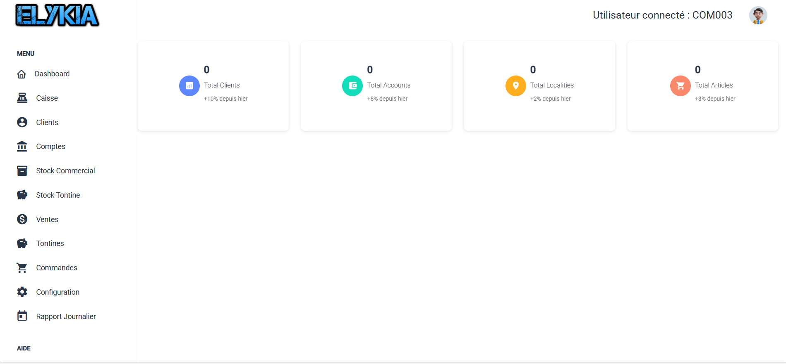
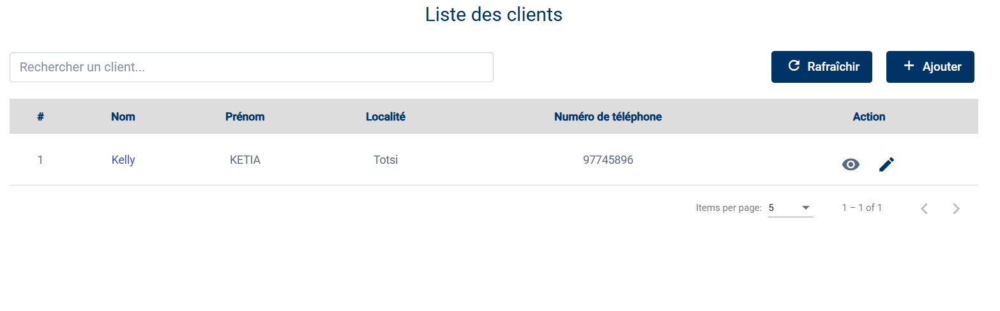
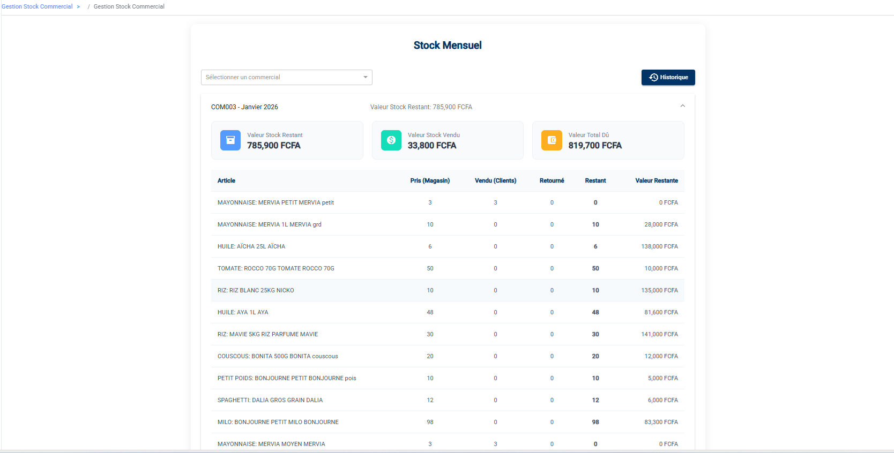
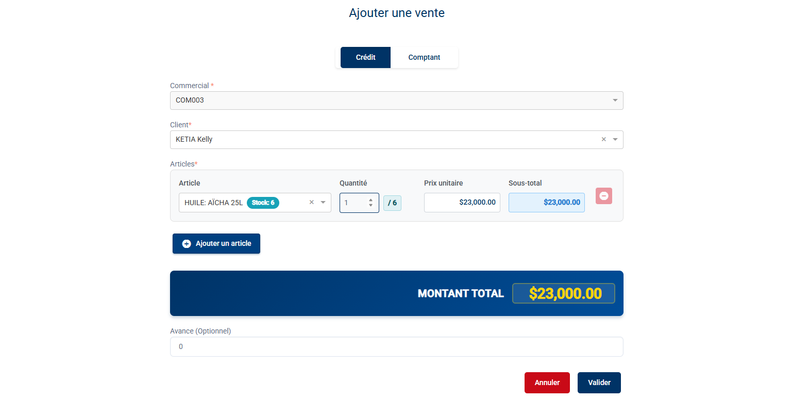
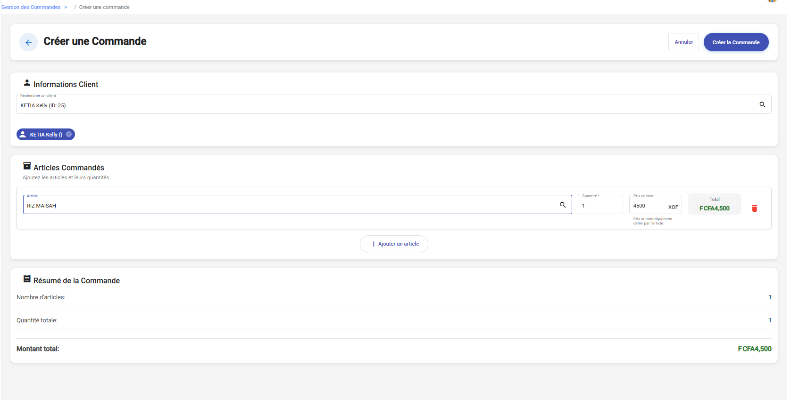
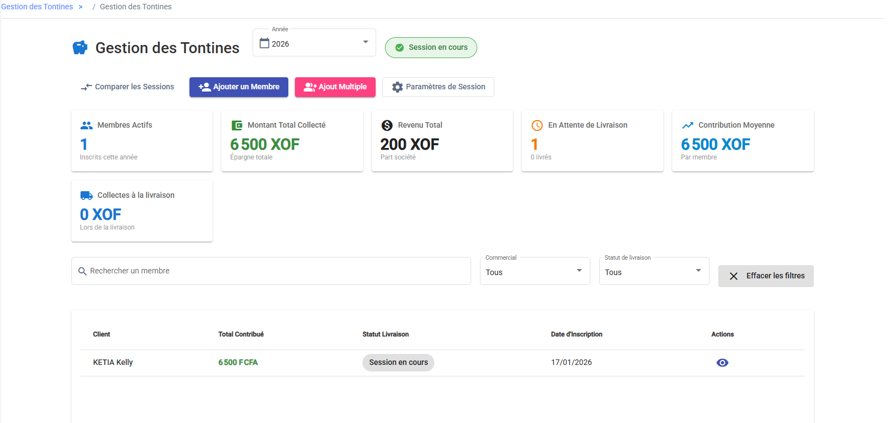
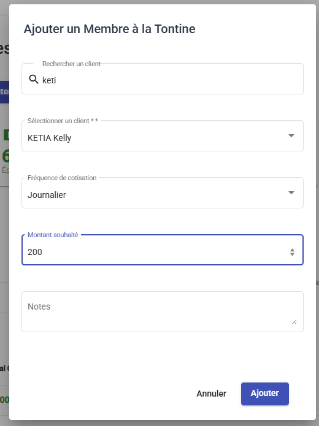
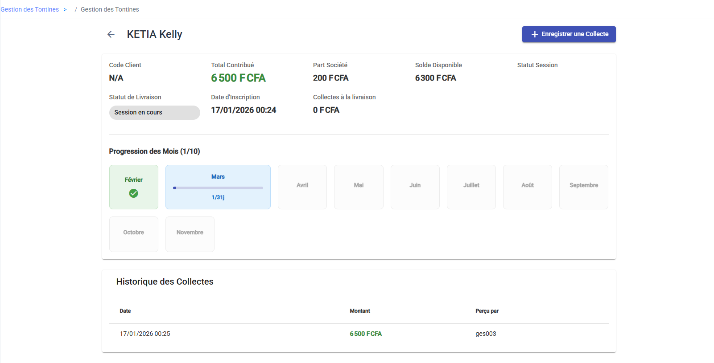

Guide Utilisateur - Profil Commercial
Ce document est une compilation de la documentation pour impression.
\newpage
Bienvenue dans votre Espace Commercial
Bonjour et bienvenue dans votre guide utilisateur.
En tant que commercial chez AMENOUVEVE-YAVEH, vous êtes le moteur de l'entreprise. Votre rôle ne se limite pas à vendre ; vous êtes le lien de confiance avec nos clients, vous gérez votre propre stock mobile et vous assurez le suivi des tontines.
Ce guide a été conçu comme une formation continue pour vous aider à maîtriser vos outils quotidiens.
Votre Tableau de Bord : Le centre de contrôle
Dès que vous vous connectez, vous arrivez sur votre Tableau de Bord (Dashboard). Considérez cet écran comme votre boussole pour la journée. Il a été pensé pour vous donner l'information essentielle en un coup d'œil, sans avoir à fouiller dans les menus.

Que regardons-nous ici ?
Tout en haut, vous avez vos Indicateurs Clés. Ce sont les chiffres qui résument votre activité : * La taille de votre portefeuille (Total Clients). * Le nombre de comptes actifs que vous gérez. * Un aperçu rapide de votre stock ou catalogue.
Sur la gauche (ou via le menu), vous trouverez vos outils de travail classés par activité : 1. Clients & Comptes : C'est votre carnet d'adresses et la gestion financière de vos clients. 2. Stock : C'est la gestion de votre "magasin mobile". Vous y verrez ce que vous avez dans votre sac ou votre véhicule. 3. Ventes & Commandes : C'est ici que vous enregistrez vos contrats et vos ventes. 4. Tontines : L'espace dédié à la gestion de l'épargne produit.
Vous avez maintenant une vue d'ensemble de votre cockpit. Passons à la pratique !
Et pour le terrain ?
Nous savons que l'essentiel de votre travail se passe dehors, souvent sans connexion internet. C'est pourquoi nous avons développé une Application Mobile spécifique pour vous.
Si vous cherchez comment utiliser l'application sur votre téléphone (faire une vente, synchroniser, encaisser), je vous invite à consulter directement le Guide de l'Application Mobile.
Prêt à commencer ? Explorons d'abord comment gérer vos clients.
\newpage
Gérer vos Clients et leurs Comptes
Le cœur de votre métier, c'est votre relation avec le client. Dans cette section, nous allons voir comment enregistrer proprement un nouveau prospect et comment gérer son compte financier pour qu'il puisse acheter à crédit.
L'accès se fait tout simplement via les menus Clients ou Comptes dans la barre latérale.
1. Votre Carnet de Clients
Rendez-vous dans le menu Clients. Ici, vous retrouvez la liste complète de toutes les personnes que vous avez enregistrées.
C'est votre base de données personnelle. Vous pouvez y rechercher un client par son nom ou son numéro de téléphone pour vérifier ses informations ou le contacter rapidement.

Comment enregistrer un nouveau client ?
C'est une étape cruciale. Plus les informations sont précises, plus le recouvrement sera facile plus tard.
- Cliquez sur le bouton + Nouveau en haut à droite.
- Le formulaire s'ouvre. Prenons le temps de bien le remplir :
- Qui est-ce ? Commencez par son Nom, Prénom et une photo si possible (c'est toujours plus convivial).
- Où habite-t-il ? Notez son adresse et son numéro de téléphone.
- Géolocalisation : C'est très important pour retrouver le client. Si vous êtes sur mobile ou tablette, cliquez simplement sur "Obtenir la position GPS". Sinon, vous pouvez le faire manuellement.
- Papiers d'identité : Pour sécuriser le crédit, nous avons besoin d'une preuve. Sélectionnez le type de pièce et prenez une photo du document.
- Associations : C'est ici que vous dites au système "C'est mon client". Sélectionnez-vous dans les champs Commercial Crédit et Commercial Tontine.
- Le premier versement : Pour valider l'ouverture du dossier, le client doit verser un solde initial (minimum 500 FCFA).
Une fois que tout est bon, cliquez sur Enregistrer. Bravo, votre portefeuille s'agrandit !

Votre client est maintenant bien enregistré. Voyons comment gérer son argent.
2. La Gestion des Comptes Financiers
Maintenant que le client existe, il lui faut un "compte" pour pouvoir acheter à crédit. C'est un peu comme lui ouvrir un compte en banque chez nous.
Allez dans le menu Comptes.
Comprendre le tableau des comptes
Ici, vous avez une vision financière. Pour chaque client, vous voyez : * Son Numéro de Compte (unique). * Son Solde actuel. * Son Statut : C'est le point le plus important. * Si le statut est Actif, tout va bien, vous pouvez lui vendre à crédit. * Si le statut est Bloqué (ou désactivé), le système refusera toute nouvelle vente.

Que pouvez-vous faire ici ?
Au bout de chaque ligne, vous avez des petits boutons d'action :
- Besoin de bloquer un mauvais payeur ? Cliquez sur l'icône "Power" (Activer/Désactiver). Cela gèle son compte instantanément.
- Une erreur de saisie ? Le crayon vous permet de corriger le solde ou le numéro de compte.
- Voir l'historique ? L'icône "Œil" vous permet de voir tous les mouvements sur ce compte.
Note importante : Généralement, le compte est créé automatiquement lors de l'inscription du client. Mais si vous avez besoin d'en ajouter un manuellement pour un ancien client, utilisez le bouton Ajouter et suivez les instructions.
Vous savez maintenant gérer vos clients de A à Z. Passons à la gestion de votre stock.
\newpage
Maîtriser votre Stock
En tant que commercial, vous êtes un véritable "magasin ambulant". Vous partez en tournée avec de la marchandise, et vous en êtes responsable jusqu'à ce qu'elle soit vendue ou ramenée.
Ce module Stock Commercial est là pour vous aider à suivre ce que vous avez dans les mains.
1. Qu'avez-vous en stock aujourd'hui ?
Pour le savoir, allez dans Stock Commercial > Stock.
Ce tableau de bord est votre inventaire personnel. Il se met à jour en temps réel à chaque fois que vous faites une vente ou que vous passez au magasin.

Regardez les cartes en haut, elles parlent d'argent : * Valeur Stock Restant : C'est la valeur de la marchandise que vous transportez actuellement. * Valeur Total Dû : C'est ce que vous devez "rendre" à l'entreprise (soit en argent issu des ventes, soit en marchandise).
Dans le tableau, pour chaque article, vous pouvez suivre son parcours : * Combien vous en avez Pris au magasin. * Combien vous en avez déjà Vendu. * Combien il vous en Reste physiquement.
Conseil : Jetez un œil à cet écran chaque matin avant de partir pour être sûr de ne manquer de rien.
Vous avez une vision claire de votre stock. Voyons comment le remplir.
2. Comment se réapprovisionner ?
Votre stock baisse ? Il est temps de demander du réassort au magasinier.
- Allez dans Stock Commercial > Demandes Sortie.
- Cliquez sur Nouvelle Demande.
- C'est comme faire votre liste de courses : choisissez les articles dont vous avez besoin et indiquez les quantités.
- Cliquez sur Envoyer.
Et ensuite ? Votre demande part chez le Gestionnaire. Une fois qu'il l'a validée, le Magasinier prépare votre commande. Quand vous irez récupérer la marchandise physiquement, le magasinier validera la "Livraison" dans le système, et votre stock personnel augmentera automatiquement.

Votre demande est partie ! N'oubliez pas d'aller chercher vos produits une fois validée.
3. Retourner de la marchandise
Parfois, vous devez rendre des articles (invendus, produits abîmés, ou fin de contrat).
La procédure est la même, mais dans l'autre sens : 1. Allez dans Stock Commercial > Retours. 2. Créez un Nouveau Retour en listant ce que vous rendez. 3. Rapportez physiquement les articles au magasin.
Dès que le magasinier accepte le retour, ces articles disparaissent de votre responsabilité. C'est aussi simple que ça.
4. Une petite précision sur la Tontine
Vous verrez un menu appelé Stock Tontine.
Le principe est exactement le même que pour votre stock commercial classique. Cependant, il est crucial de ne pas mélanger les deux ! * Le Stock Commercial sert aux ventes à crédit classiques. * Le Stock Tontine est réservé aux livraisons de fin d'année pour les membres de la tontine.
Gardez bien ces deux stocks séparés physiquement et dans l'application pour éviter les erreurs de comptabilité.
Vous maîtrisez maintenant les flux de marchandises. Il est temps de vendre !
\newpage
Ventes et Commandes
C'est ici que tout se concrétise ! Nous allons voir comment enregistrer vos contrats de vente et gérer les commandes de vos clients.
Il y a une distinction importante à faire : * Une Vente est un contrat ferme : le client part avec la marchandise, et la dette est créée. * Une Commande est une réservation : le client veut le produit, mais la transaction n'est pas encore finalisée.
1. Réaliser une Vente (Le Contrat)
C'est l'opération que vous ferez le plus souvent. Allez dans le menu Ventes.
Vous arrivez sur la liste de tous vos contrats passés. Vous pouvez voir rapidement qui a payé (Soldé) et qui est encore en train de rembourser (En cours).
Comment créer un nouveau contrat ?
- Cliquez sur le bouton Ajouter.
-
Le formulaire de vente s'ouvre.
- Type de Vente : Choisissez "Crédit" (c'est le plus courant) ou "Comptant".
- Qui vend ? Sélectionnez votre nom dans la liste des commerciaux.
- A qui ? Cherchez votre client.
- Quoi ? Ajoutez les articles. Le système vous montrera le prix correspondant au mode de vente choisi.
- Attention : Vous ne pouvez vendre que ce que vous avez réellement dans votre stock personnel !
- L'Avance : Si le client verse un premier acompte tout de suite, notez-le ici.
-
Tout est bon ? Cliquez sur Valider.
Le système s'occupe du reste : il génère le contrat, calcule l'échéancier de paiement pour le client, et retire les produits de votre stock.

Félicitations, votre vente est enregistrée !
2. Gérer les Commandes
Parfois, un client veut réserver un produit que vous n'avez pas encore, ou il réfléchit. Utilisez le menu Commandes pour cela.
Prendre une commande
- Cliquez sur Créer une Commande.
- C'est très simple : trouvez le client, ajoutez les articles qu'il souhaite, et validez.
- La commande est enregistrée avec le statut Créé. Elle n'impacte pas encore votre stock ni le compte du client.

Transformer l'essai
Le client est prêt à conclure ? Parfait ! Vous n'avez pas besoin de tout ressaisir.
- Ouvrez la commande en question.
- Dans le menu d'actions, choisissez Transformer en Vente.
- Confirmez.
La commande devient instantanément un contrat de vente officiel. C'est un gain de temps précieux sur le terrain.
Vous savez maintenant gérer tout le cycle de vente. Passons à un produit spécifique : la Tontine.
\newpage
La Gestion des Tontines
La Tontine est un produit très populaire. C'est un système d'épargne programmée qui permet à vos clients de cotiser petit à petit pour s'offrir des produits en fin d'année.
Votre rôle est d'inscrire les membres, de collecter leurs mises régulières, et d'assurer la livraison finale. Tout se passe dans le menu Tontines.
1. Piloter votre Tontine
Le Tableau de Bord Tontine vous donne la température de votre session en cours.
Vous pouvez voir immédiatement : * Combien de Membres Actifs cotisent actuellement. * Le Montant Total que vous avez déjà collecté. * Qui a fini de payer et attend sa livraison (En Attente de Livraison).
C'est aussi d'ici que vous pouvez basculer pour voir les archives des années précédentes si besoin.

Vous avez la vue d'ensemble. Voyons comment faire grandir ce groupe.
2. Gérer vos Membres
Inscrire un nouveau membre
Un client veut rejoindre la tontine ? 1. Cliquez sur Ajouter un Membre. 2. Choisissez le client. 3. Définissez les règles du jeu avec lui : * Combien ? (Montant de la mise). * Tous les quand ? (Fréquence : tous les jours, toutes les semaines...). * Pendant combien de temps ? (Nombre de mises). 4. Enregistrez. Le voilà inscrit !
Astuce : Si vous démarrez un nouveau groupe, utilisez le bouton Ajout Multiple pour inscrire plein de monde d'un coup avec les mêmes paramètres.

Suivre les cotisations
Pour savoir où en est un client, cliquez sur son nom dans la liste. Sa fiche détaillée est très visuelle : * Une grille de progression vous montre les cases vertes (payées) et grises (restantes). * Vous avez l'historique précis de chaque versement avec la date.
Si un client vous donne de l'argent hors de votre tournée habituelle, vous pouvez utiliser le bouton Enregistrer une Collecte directement depuis cette fiche.
Vos membres cotisent régulièrement, c'est parfait. Arrive enfin le moment tant attendu : la livraison.
3. La Livraison (La récompense !)
C'est le moment préféré des clients : la fin du cycle. Quand un membre a payé toutes ses mises, il est temps de transformer son épargne en produits.
Comment faire ? 1. Allez sur la fiche du membre. 2. Si tout est payé, un bouton Préparer la Livraison apparaît. Cliquez dessus. 3. Avec le client, choisissez les articles qu'il veut pour le montant de son épargne. 4. Validez la demande.
La demande part alors en validation. Une fois approuvée par le gestionnaire, vous pourrez récupérer les produits dans votre Stock Tontine et les remettre au client heureux.

Voilà, le cycle de la tontine est bouclé !
\newpage
Votre Compagnon de Terrain : L'App Mobile
Vous passez la majeure partie de votre temps dehors, au contact des clients. L'application mobile a été conçue pour être votre bureau de poche, capable de fonctionner partout, même sans internet.
Voici comment elle fonctionne.
1. Bien Démarrer
Se connecter
Au bureau, connectez-vous au Wi-Fi de l'entreprise. Lancez l'application, entrez vos identifiants et cliquez sur Se Connecter.
Le chargement initial (Très important !)
La première fois (ou après une réinitialisation), l'application doit télécharger toutes les données du serveur pour pouvoir travailler hors ligne ensuite.
Règle d'or : Quand la barre de chargement apparaît, ne touchez à rien et ne fermez pas l'application. Attendez patiemment qu'elle atteigne 100%. C'est ce qui garantit que vous aurez tous vos clients et votre stock avec vous sur le terrain.

Vous êtes prêt à partir en tournée !
2. Votre Tableau de Bord Mobile
Une fois connecté, vous arrivez sur l'accueil. Tout est pensé pour aller vite.
- En haut : Vous voyez si vous êtes En ligne ou Hors ligne. Le petit bouton avec les flèches (
) sert à synchroniser (nous y reviendrons). - Au milieu : Vos chiffres du jour (Ventes, Recouvrements...).
- En bas : Les boutons d'action rapide. C'est ce que vous utiliserez 90% du temps : Nouvelle Distribution, Recouvrement, Tontine.

3. Faire une Vente (Distribution)
Vous êtes face à un client qui veut acheter à crédit. Pas de papier, tout se fait sur l'écran :
- Appuyez sur Nouvelle Distribution.
- Qui ? Touchez "Sélectionner un Client" et trouvez-le dans votre liste.
- Quoi ? Ajoutez les articles qu'il prend. Vous voyez tout de suite si vous avez du stock.
- Combien ? Le total se calcule seul.
- S'il donne une Avance, notez-la.
- L'application vous dit combien il devra payer par jour (Mise journalière).
- C'est fini ! Cliquez sur CONFIRMER.
Vous pouvez alors imprimer le reçu immédiatement avec votre petite imprimante Bluetooth. Le client est content, et tout est enregistré.

4. Encaisser de l'Argent (Recouvrement)
Vous passez voir un client pour qu'il paie sa traite quotidienne.
- Appuyez sur le gros bouton Recouvrement.
- Choisissez le client.
- L'application vous montre ses crédits en cours. Touchez la carte du crédit pour dire "C'est celui-là qu'on rembourse".
- Tapez le montant qu'il vous donne.
- Validez et imprimez le ticket.
C'est aussi simple que ça.

5. La Tontine sur Mobile
Pour la tontine, c'est le même principe. Allez dans le menu Tontine.
- Pour inscrire quelqu'un, utilisez le bouton "+".
- Pour encaisser une mise, cliquez sur le membre, puis sur le petit menu (les 3 points) et choisissez Enregistrer une cotisation.
6. Fin de Journée : Le Rapport
Avant de rentrer ou de verser votre caisse, vous devez savoir combien vous avez.
Cliquez sur Rapport. L'application fait les comptes pour vous : * Combien vous avez vendu. * Combien vous avez encaissé (Recouvrements + Avances + Tontine).
Regardez la case Total à Verser. C'est exactement la somme en espèces que vous devez avoir dans votre poche. Vous pouvez imprimer ce rapport pour le joindre à votre versement.

Votre journée est finie, mais il reste une dernière étape cruciale.
7. De retour au bureau : La Synchronisation
C'est la dernière étape, mais c'est la plus importante. Tout ce que vous avez fait aujourd'hui est enregistré dans votre téléphone. Il faut maintenant l'envoyer au serveur de l'entreprise.
- Assurez-vous d'être connecté au Wi-Fi du bureau.
- Sur l'accueil, cliquez sur l'icône Sync (
). - Laissez tourner jusqu'à ce que ce soit fini.
Voilà ! Vos ventes sont comptabilisées, votre stock est à jour, et vous êtes prêt pour demain.
\newpage